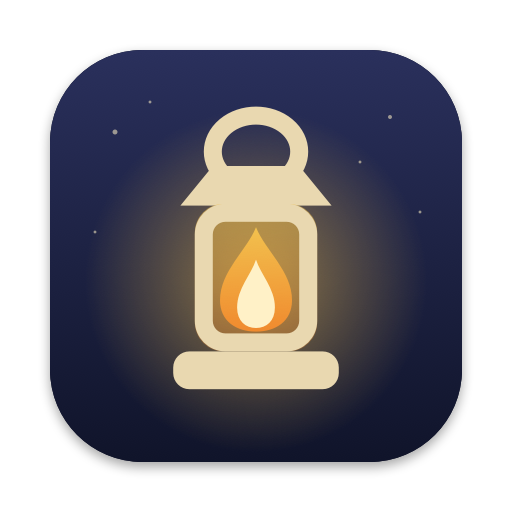
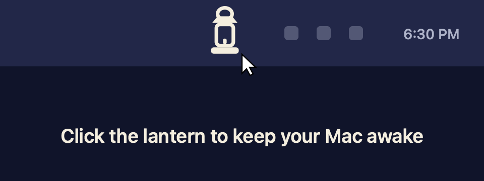

Leave the light on.
Lamplight keeps your Mac or Windows PC awake for as long as you need, even with the lid closed. Click the lantern to turn it on. Click again to turn it off.
Free and open source (MIT). macOS 13 or later on Apple silicon and Intel. Windows 10 and 11 on x64 and ARM.

Why it exists
Closing the lid shouldn't end the job.
Plenty of tools stop your Mac from dozing off while you're away. But shut a laptop's lid and macOS sleeps it anyway, unless a display is plugged in. Your download stalls, your build stops, your remote session drops. Lamplight covers both cases, and it puts normal sleep back the moment you're done.
How it works
One click on, one click off.
Click the lantern
The flame lights and your Mac stays awake. By default it runs until you turn it off.
Close the lid, if you like
Everything keeps running. On a Mac, macOS asks for your password once. On Windows, nothing to set up.
Click again when you're done
Or let a timer run out. Either way, normal sleep comes straight back.
What's in the menu
Right-click for everything else.
Timers
15 and 30 minutes, 1, 2, 4 or 8 hours. Or set a timer as the default for a plain click.
Time left at a glance
A small countdown sits next to the lantern while a timer runs. Hide it if you prefer.
Screen on or off
Keep the display lit, or let it sleep while the Mac itself stays awake.
Low battery cutoff
Turns itself off at 10% by default, so a closed laptop in a bag doesn't run flat.
Always puts sleep back
On turn off, timer end, battery cutoff and quit. After a force-quit, on the next launch.
Nothing leaves your Mac
No account, no analytics, no network connections at all. Settings stay in one local file.
Lid-closed mode, explained
One narrow permission, and you can read every line.
macOS only lets an administrator switch off lid sleep, through pmset disablesleep. So Lamplight asks for your password once and adds a single rule that lets it run that one command, on or off, and nothing else. It's checked with visudo before it's installed, and you can remove it from the menu any time.
On Windows there's no password at all: Lamplight sets your power plan's lid action to "Do nothing" while it's on, and puts your own setting back afterwards.
/etc/sudoers.d/lamplight
you ALL=(root) NOPASSWD:
/usr/bin/pmset -a disablesleep 1,
/usr/bin/pmset -a disablesleep 0Questions
Before you download
Why does my computer warn me the first time I open it?
Lamplight is signed but not notarized, because notarizing needs a paid Apple developer account. Open System Settings → Privacy & Security and click Open Anyway, or run xattr -dr com.apple.quarantine /Applications/Lamplight.app once. On Windows, SmartScreen may say the same: click More info, then Run anyway. The full source is on GitHub if you'd rather build it yourself.
Do I have to give it my password?
Only for lid-closed mode. Click Not Now and everything else still works; your Mac will just sleep when you close the lid.
Will my Mac overheat in a bag?
A running Mac in a closed bag does get warm. Lamplight turns off at the battery level you choose, but don't leave a closed, running laptop somewhere with no airflow for hours.
I can't see the lantern.
On a Mac with a full menu bar, macOS hides extra icons behind the notch or in the overflow. Quit a menu bar app or two, or check System Settings → Menu Bar. On Windows, click the ^ arrow next to the clock and drag the lantern onto the taskbar.
How do I uninstall it?
Mac: right-click the lantern and choose Remove Lid-Closed Permission… if you set it up, then quit and move Lamplight to the Trash. Windows: untick Start with Windows, choose Exit, and delete Lamplight.exe.
Keep it running tonight.
Free forever, open source, and small enough to read in an evening.
Download Lamplight